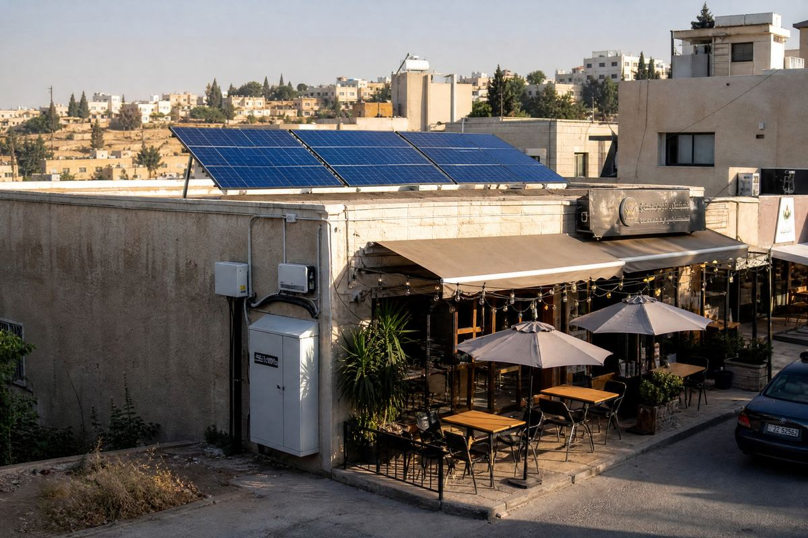

🔧 System at a glance
This is a hybrid commercial system for a small street cafe: solar on the rooftop feeds the loads directly, stores surplus in a lithium battery, and the grid stays connected for backup. The battery is the heart of it — cafe business peaks after sunset.
| Component | Specification |
|---|---|
| Solar panels | 8 × 500 W monocrystalline = 4,000 Wp (4.0 kWp) |
| Inverter | 4 kW hybrid inverter (solar + battery + grid input, export-limited) |
| Battery | 9.6 kWh LiFePO4 lithium (2 × 4.8 kWh units) |
| Loads | 3 commercial fridges (≈1 kW day-long), 2 × 1.5 kW split AC, LED lighting, coffee machines, TV/POS |
| Mounting & protection | Rooftop ballasted mounts, south-facing, DC isolator, breakers, surge protection, earthing |
| Grid | Stay connected — battery + grid cover power cuts and cloudy evenings |
Size your own array with the panel calculator and check your evening loads with the home backup calculator.
💡 Estimated energy output
With about 5.5 peak sun hours in northern Jordan and a realistic performance ratio of ~0.78 (heat, wiring, inverter losses), a 4.0 kWp array gives roughly:
| Component | Specification |
|---|---|
| Per day (summer) | ~17–18 kWh/day |
| Per day (winter) | ~12–14 kWh/day |
| Cafe demand | ~12–15 kWh/day (peak in the evening, 5–11 PM) |
💰 Cost breakdown (Jordan, approximate)
Hybrid with battery — rough planning figures for Jordan (prices move, always get local quotes):
| Component | Specification |
|---|---|
| 8 × 500 W panels | ~850 – 1,300 |
| 4 kW hybrid inverter | ~550 – 850 |
| 9.6 kWh LiFePO4 battery (2 units) | ~1,200 – 1,800 |
| Roof mounts, cable, protection | ~400 – 600 |
| Total (hybrid with battery) | ~3,000 – 4,550 |
| Grid-tied version (no battery) | ~2,200 – 3,300 |
📈 Savings & payback
In the real example above, a small cafe in Mafraq was paying roughly 200–350 JD per month on the commercial tariff, with fridges and AC running the longest hours. The 4 kW hybrid system now covers most of that bill and keeps the fridges cold and the AC running through power cuts — saving an estimated 150–300 JD per month, so the system pays back in about 1.5–2.5 years — after which shop energy is essentially free for the panels' 25+ year life.
Your shop may differ — check your own loads with the home backup calculator, size the battery with the battery calculator and run the payback in the ROI calculator, or design the whole system at once in the system report builder.
🛠️ Field note
We built this system for a street cafe in Mafraq, Jordan: 8 panels on a flat rooftop facing south, a 4 kW hybrid inverter and two 4.8 kWh lithium batteries stacked beside the shop door. The shop's busiest hours are 5–11 PM, exactly when the sun is down — without the battery, solar would have helped almost nothing. Now the fridges never warm up during power cuts, the AC keeps customers comfortable through the hottest evenings, and the monthly bill dropped from ~300 JD to almost nothing in summer.
🧰 Design your own system
- Home backup calculator — match loads to panels and battery.
- Battery calculator — size backup storage.
- Solar panel calculator — how many panels for your usage.
- ROI calculator — payback in your currency.
- Full system report — design the whole system in one page.
Wondering between grid-tied, off-grid and hybrid? See the guide on grid-tied vs off-grid vs hybrid and the battery bank design guide. For your country's tariffs and payback, visit Solar by Country.
❓ Frequently asked questions
How big of a solar system does a small cafe need?
Most small cafes and restaurants run well on 3–5 kWp. Fridges, AC units, lighting and coffee machines typically total 8–14 kWh per day — a 4 kWp hybrid system with battery covers that, including the busy evening hours.
Does a cafe solar system work at night when customers are in?
Yes — that is the point of the battery. A cafe's busiest hours are often 5–11 PM, after the sun sets, so a hybrid system stores daytime production and releases it when customers arrive and the AC and lighting run hardest.
How much does a 4kW cafe solar system cost in Jordan?
Roughly 2,800–4,200 JD for a hybrid system with battery in Jordan, including panels, hybrid inverter, battery, mounting and protection. A grid-tied setup without battery would be 800–1,200 JD cheaper but gives nothing during power cuts.
Is solar worth it for a small business versus just paying the bill?
Commercial electricity tariffs in Jordan are high (roughly 0.13–0.16 JD per kWh and rising), so a cafe paying 200–350 JD monthly can save most of that. The system typically pays back in about 1.5–2.5 years and then runs free for 25+ years.
Note: all figures are approximate and for planning only. Production depends on your sun hours, shading and roof orientation; prices and tariffs vary and change over time. Always confirm with local installers and your electricity provider.